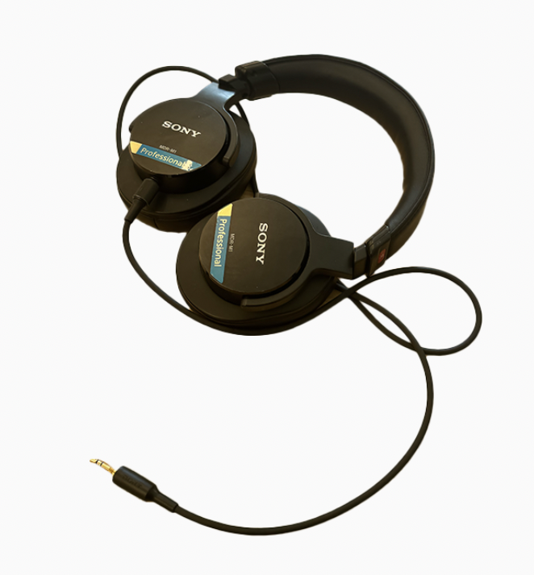

Headphones

Sony MDR-M1 Professional Reference Closed Monitor Headphones
Size
7.5*6.5*3 inches
Timeline
Owned less than a year
Released Fall of 2012
Description
Primarily used for listening to music, barely have any projects in regards of audio aspects e.g. Playing an instrument, videography, recording, sound design, etc. Connects with devices through an Aux cable, seldomly for a cellphone with a Aux to USB-C converter. Well known for standard or rather flat audio monitoring qualities, yet I am satisfied for using it for music listening.
Memories
Not a lot of memories about the headphones per se, but I must have listened to thousands of albums with it, made good memories, and made quite a lot of projects while listening.
Dreams
Listening to music is a huge part of my life, and I will continue to listen more and more.
Wonders
As of now, bluetooth headphones, or 'earbuds' are so common. But I've never used one, wonder if I would ever purchase and get to use it. Currently have no thoughts, might stick with wired headphones forever.